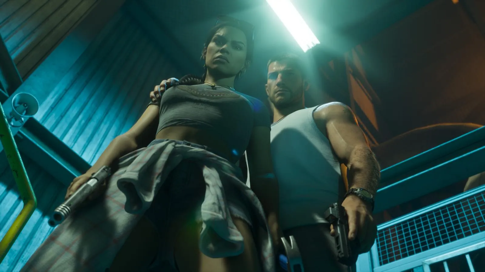
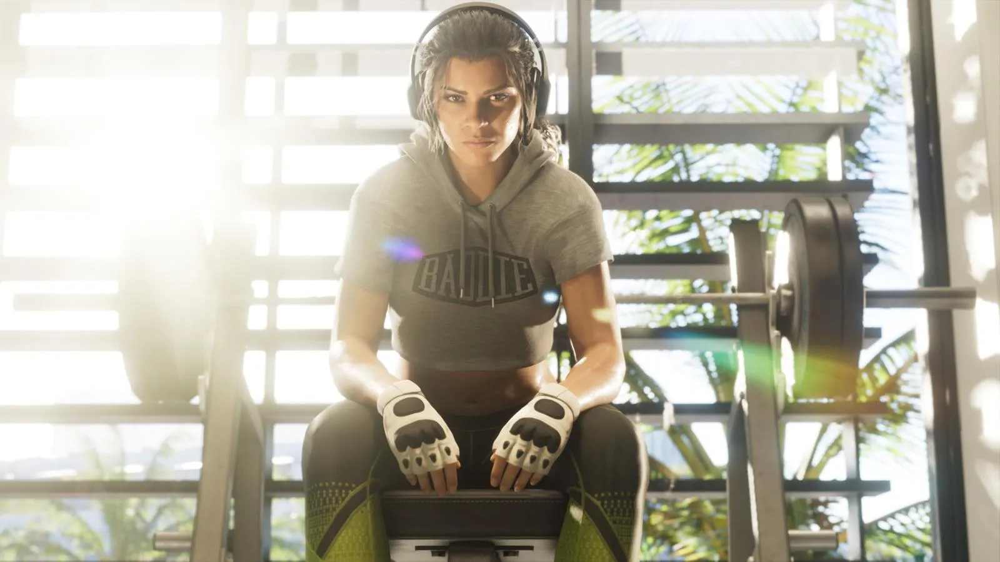
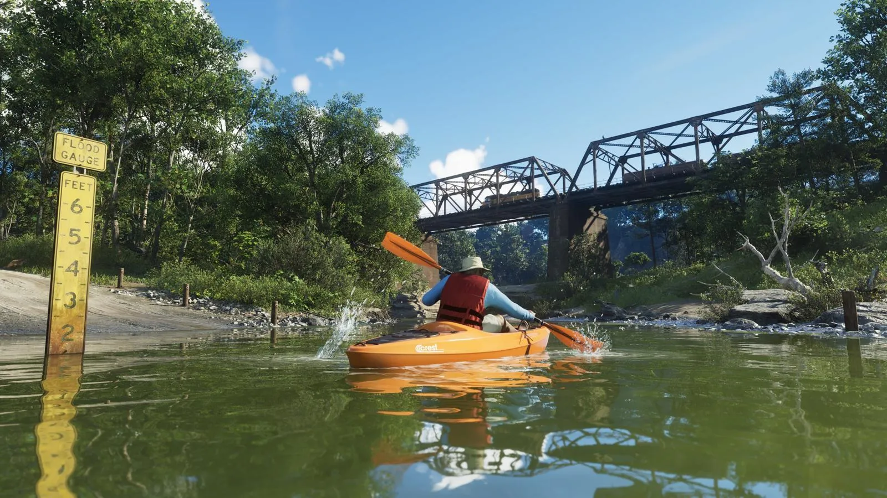

Новые механики GTA 6: что изменилось
Опубликовано:

- Между Джейсоном и Лусией можно переключаться, когда позволяет сюжет. Их отношения растут от совместных дел.
- Полиция запоминает приметы: одежду, оружие, камеры. Переоделся — сбросил часть примет.
- Угон стал сложнее: трекеры, сигнализации, клонер ключей; сканер в телефоне всё показывает.
- Деньги важнее, чем раньше: ограбления, заказы скупщиков, приложение WAINK.
Обновлено 1 ноября 2026. Добавили подробности из журнала Edge №430 и интервью Роба Нельсона (Rockstar North) для IGN. Нельсон рассказывал по демо июльской сборки, поэтому отдельные детали к релизу могут измениться. Всё непроверенное мы не публикуем.
Два героя и их отношения
Между Джейсоном и Лусией можно переключаться, когда это позволяет сюжет. Они живут в одной квартире, а насколько они близки — решает игрок.
- Близость измеряется по шкале из четырёх уровней. Она растёт от совместных дел: прогулок по пляжу, велосипеда, спортзала (после покупки абонемента), поездок вдвоём (Edge), бильярда, мини-гольфа, каяка и ограблений (IGN).
- Партнёру можно написать или позвонить в любой момент. Если весь день провести порознь и проигнорировать сообщение «спокойной ночи», отношения немного ухудшатся.
- Совсем расстаться герои не могут. Можно ли им пожениться, Нельсон подтверждать не стал.
- По словам Нельсона, от того, берёг ли игрок отношения, «определённо» зависит, как пойдёт их история.

Розыск, полиция и криминальный профиль
- Розыск появляется, только если преступление кто-то видел или сработала сигнализация. До объявления розыска есть небольшая фора.
- Полиция запоминает приметы: внешность, был ли герой один или с напарником, одежду, попал ли он на камеры и какое у него оружие. Эти данные видны иконками вверху экрана.
- Приметы можно сбросить: разделиться с напарником, переодеться, выбросить оружие или сменить машину.
- Дробовик в руках привлекает больше внимания, чем дробовик за спиной.
- У полиции есть шипы на дорогах и кинологи с собаками для погони пешком.
- Режим Focus подсвечивает, например, полицейских рядом — Нельсон сравнил его с «орлиным глазом» из RDR 2.
- При аресте, как и раньше, — экран Busted и возрождение.
Криминальный профиль оценивает поведение по шкале от «Профессионала» (Professional) до «Неисправимого» (Irredeemable) — с иконками ангела и дьявола. Обычные действия по заданию в минус не идут, а лишняя жестокость сдвигает профиль; нелетальные методы — запугивание, обезвреживание — тоже учитываются. По словам Rockstar, профиль влияет на то, как развивается история.
Машины и угон
- Завести любую припаркованную машину одной кнопкой больше нельзя: для некоторых нужен клонер ключей или slim jim. Выкинуть водителя из машины можно всегда.
- Водитель может убежать, дать отпор или достать оружие.
- У дорогих машин бывают трекеры: машина передаёт, где она, а владелец заявляет об угоне. По словам Нельсона, машина с продвинутым трекером сигналит полиции, если ехать медленно.
- Сканер в телефоне показывает, заперта ли машина, есть ли сигнализация и трекер, сколько за неё дадут в Pay ’n’ Spray или у скупщика и сколько стоит её регистрация.
- У каждой машины есть топливо и состояние двигателя.
- Через приложение Scooter Bros можно вызвать свою машину; в ней хранятся купленное оружие и запасная одежда.
- В погоне руль можно отдать напарнику и стрелять вторым героем.
Деньги, ограбления и скупщики
Деньги в GTA 6 важнее, чем в прошлых частях: между некоторыми сюжетными миссиями нужно накопить сумму, и игра даёт на это время.
- Заработать можно ограблениями заправок и ювелирных магазинов. По словам Нельсона, ограбить можно почти любой бизнес — в демо это был магазин наушников. Грабить можно одному или вдвоём, уходить — через чёрный ход.
- Комбинации к сейфам можно найти, а взрывчатка может повредить часть добычи.
- Второй способ — угонять машины на заказ. В приложении WAINK — список моделей, которые ищут скупщики, с уровнем защиты и слежения. Чем надёжнее защита, тем сложнее угон.
- За битую машину скупщик платит меньше. У скупщиков стоят глушилки, поэтому трекер угнанной машины там не срабатывает.
Тело, внешность и убежища
- Еда сильно восстанавливает здоровье, но если переедать — герой набирает вес.
- Спортзал добавляет мышцы и силу; если прийти вдвоём, Джейсон и Лусия тренируются вместе.
- Убежища, по словам Нельсона, «скорее ближе к лагерям в RDR 2», чем к убежищам прошлых GTA.
- Дома можно только укоротить волосы или побриться налысо. Новые стрижки — в салонах, у каждого салона свои фирменные причёски.
- Магазины одежды разбросаны по карте: у каждого есть общий ассортимент и вещи, которые продаются только там.

Мир, транспорт и погода
- Интерьеров «на порядок больше», чем в прошлых играх, — Аарон Гарбут, Rockstar North.
- Дороги стали уже, чем в GTA 5, — ради правдоподобного масштаба.
- У прохожих около 600 000 анимаций и свои черты: темперамент, агрессивность, что они видели и как игрок с ними обошёлся.
- По всей Леониде работают автобусы и поезда. Такси Ryde Me (аналог Uber) работает как быстрое перемещение.
- Погода: шторм видно издалека, дороги намокают и сохнут с разной скоростью, ветер качает деревья и волны, самолёты и вертолёты болтает, прохожие прячутся от непогоды. Закаты и ночи стали длиннее.
- Занятия: бильярд, мини-гольф, каяк, спортзал, дайвинг, рыбалка, охота, гонки. Животных можно изучать и собирать в коллекцию — как в RDR 2.

Телефон
В телефоне — сканер машин, WAINK (заказы скупщиков), Scooter Bros (вызов своей машины) и Ryde Me (такси). Соцсеть Snapmatic герои могут только листать: по словам Нельсона, они — «пара в бегах». Подробный пересказ материала Edge — Журнал Edge №430: что Rockstar рассказала о GTA 6 за три недели до выхода.
Источники: Edge №430 — обложечный материал о GTA VI (29.10.2026, опубликован на GamesRadar+); IGN — интервью с Робом Нельсоном, Rockstar North (октябрь 2026, по пересказу Inven Global); Rockstar Games — rockstargames.com/VI; ранние превью журналистов (по данным GTABase, VICE).
Каждый день — одно сравнение: кадр игры рядом с реальным фото. Подписывайтесь:
YouTubeInstagramTikTok